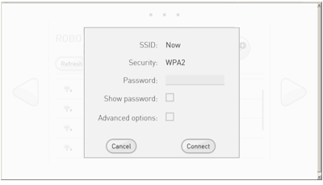

Setting NAO‘s WiFi connection¶
Why setting a WiFi connection¶
You can connect NAO to your computer using a wired or WiFi connection:
- Wired connection is mandatory for the initial settings.
- WiFi connection is highly recommended as soon as NAO starts moving.
Warning
Make sure NAO is not connected with an Ethernet cable while executing movements which could pull the wire and damage the port.
{kind=link}
WiFi connection¶
| Step | Action |
|---|---|
| Remove the hatch behind the head of the robot to access to the Ethernet socket. | |
Plug an Ethernet cable. 
|
|
Connect the Ethernet cable to your Internet box. For further details, see: Plugging my robot to Ethernet. |
|
Access the NAO Web page and log-in. For further details, see: Accessing the NAO Web page. |
|
| In the Network settings page, choose and configure a WiFi network. |
Result: the WiFi connection is set, you can now disconnect the Ethernet cable and close the hatch behind the head of the robot.
To choose and configure one of the displayed WiFi networks, see: Standard WiFi connection.
Specific cases
| If you ... | See ... |
|---|---|
| must use a hidden network | WiFi connection to a hidden network |
| need to configure the MAC address filtering of your WiFi accesss point | MAC Addresses |
Standard WiFi connection¶
| Step | Action |
|---|---|
Select one of the available WiFi networks. Note: choose a WiFi network having one of the Supported personal securities. |
|
Complete the required parameters, and click the Connect button.  |
{kind=link}
Supported personal securities¶
NAO supports WEP, WPA & WPA 2 personal securities.
Note
For WEP only the passphrase of 5 characters for WEP40 and 12 characters for WEP104 are supported, always prefer the hexadecimal representation which is the only standard.
WiFi connection behind a proxy¶
Tested configuration: Squid - HTTP CONNECT - without authentication.
To connect NAO behind a proxy:
{kind=link}
{kind=link}
MAC Addresses¶
MAC Addresses section displays the MAC Addresses you could need if your WiFi access point requires to set the MAC Address filtering.
{kind=link}
Wired connection¶
Warning
Make sure NAO is not connected with an Ethernet cable while executing movements which could pull the wire and damage the port.
| Step | Action |
|---|---|
| Remove the hatch behind the head of the robot to access to the Ethernet socket. | |
Plug an Ethernet cable.
|
|
Connect the Ethernet cable to your Internet box. For further details, see: Plugging my robot to Ethernet. The Wired network appears in the list. |
|
| Select the Wired network. |
{kind=link}
Plugging my robot to Ethernet¶
If you have a router with a spare Ethernet port:
The router will act as a DHCP server and give NAO it’s IP address. |
{kind=link}
| Alternatives | |
If you have no spare Ethernet port or no router at all:
Linux only: see Local-Link an alternative to DHCP in order to check if your network manager is set for using link-local. |
|
| Note: in case of local connection to a computer, the Aldebaran Cloud may not be reachable. Nevertheless, local connection to NAO Web page and Choregraphe is still possible. | |
{kind=link}
{kind=link}
Other configuration options¶
Local-Link an alternative to DHCP¶
In case of network without DHCP, it is possible to use link-local addressing. Link-Local is a standardized alternative to settings static IP address. With this feature you can obtain an address automatically, and establish a local network communication between your NAO and your computer.
If your NAO say that he got an address in the range of 169.254.X.X, the reason is haven’t discover any DHCP server and NAO has fall back to Local-Link.
Since 1.12 version you can just plug a network wire between your NAO and your PC, and obtain a communication without setting a static IP address. For MAC and Windows computer you have nothing to do to make it work, with Linux PC please verify if your network manager is set for using link-local.
{kind=link}
{kind=link}
{kind=link}
{kind=link}
{kind=link}